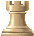
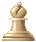
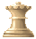
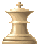
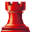
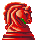
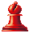

| CHESS CUM CHAT |
Purpose of the Game Chess
The primary objective in chess is to checkmate your opponent's King. When a King cannot avoid capture then it is checkmated and the game is immediately over. If a King is threatened with capture, but has a means to escape, then it is said to be in check. A King cannot move into check, and if in check must move out of check immediately. There are three ways you may move out of check:
1) Capture the checking piece;
2) Block the line of attack by placing one of your own pieces between the checking piece and the King. (Of course, a Knight cannot be blocked.);
3) Move the King away from check.
If a King is not in check, and no other legal move is possible, then the position is said to be in stalemate. A stalemated game is a draw, or a tie.
White Pieces
|  |  |  |  | ||
| White Pawn | White Rook | White Knight | White Bishop | White Queen | White King |
Black Pieces
|  |  |  | |||
| Black Pawn | Black Rook | Black Knight | Black Bishop | Black Queen | Black King |
How to make move (It is a two-click process)
The chess game is fully mouse oriented and key board is not functional.
| First Click: | On the square containing the piece which the player wants to move. (The player can move only his piece), the square gets highlighted by RED colour. |
| Second Click: | The square where he want the piece to move. |
| First Click: | On the square containing the piece which the player wants to move. (The player can move only his piece), the square gets highlighted by RED colour. |
| Second Click: | The square containing the opponent piece which the player wants to capture. |
How to reconsider a piece to move (Deactivating the selected
piece)
Once the user as clicked on the piece to move and rethinks on the piece to move, for this he can click on any of his other
piece, the highlighted square will be de-activated and he can start over again.
Single Click on any of your own piece.
How to perform a castling
Castling is an important move in chess. It allows a player to quickly move both the King to safety and the Rook to the center for battle. For this reason, wise players carefully guard their ability to castle and usually castle early in the game. Likewise, clever players will attempt to prevent their opponent from castling.
When castling the player moves his King two squares toward one of the player's Rooks and moves that Rook to the opposite side of the King. A player may not castle if either the King or the Rook involved have already moved. Also, the King may not castle out of, through, or into check. There must be no pieces between the King and Rook when castling.
To make any castling, whether o-o (short castling) or o-o-o (long castling) the user has to perform following operation:
| First Click: | On the square containing the King. |
| Second Click: | On the square where the king will be placed after castling. |
How to perform an en-passant
A player may capture another player's pawn in passing (En Passant) under very specific circumstances. This move is designed to prevent a player from taking advantage of the two-square first move rule for pawns which might allow them to pass their opponent's pawn(s) without a chance to capture.
The capture is made exactly as if the pawn moved only one square on the first move. This move, like any other, is optional and can occur as often as a similar situation arises between pawns.
| First Click: | On the square containing the Pawn. |
| Second Click: | On the square skipped by the Opponent Pawn. |
The user will enter the text on the respective area and will click on the send button or will press the enter key.